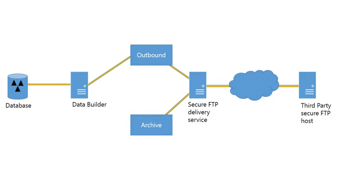

XML Minifier
Your mission
You work for a company called DataHighway. DataHighway's business model depends on trading information with its value adding partners. Bulk data exchange are the heartbeat of your business. Another partner data integration project has landed in your department's inbox. Your mission, should you choose to pull it from the backlog, is to optimize the the data delivery process. Your constraints? You must use XML as the data format and secure FTP as the delivery method. Now hurry, the data and DataHighway's revenue is counting on you.
Getting the lay of the land
Here is a map of the territory.

Data and XML system flow
Here's what we are looking at step by step:
- Some service called Data Builder is going to create an XML file populated with data from the Database.
- Data Builder then drops the XML file off so the FTP delivery service can send it to the desired partner.
- The secure FTP delivery service sends a copy of the file to our valuable partner's secure FTP host.
- SUCCESS! Now we place the XML file in the archive folder for future troubleshooting according to our data retention policy.
I'll leave retries and what-not out of the picture for the sake of this argument. This is the happy path after all. Things never fail.
Ouch. That will cost you.
Storage and bandwidth are cheap right? Why are we going to waste time optimizing something so inexpensive. Let's run the numbers.
20MB per un-optimized XML file * 1000 XML files sent per day = 20,000 MB or 19 GB a day
Did I mentioned we are using a storage area network (SAN) with 5 nines of reliability and real-time mirroring. We're talking around $100 per GB of storage. Like I said, data is DataHighway's lifeblood. So far we are looking at a minimum of $1,900 work of disk tied up a day. Bandwidth would follow a similar cost path depending on how we are set up. Even if our ISP gives us a nice deal it won't matter because we are pushing 19 GB. And this is only one file. What about the other 50 files we pass around in the technological powerhouse that is DataHighway's data exchange?
Learning from those web developers
Web developers love to minify everything. CSS, JavaScript, and any other data sent down to the web browser get lovingly minified to reduce the amount of bandwidth and the size of files the browser needs to handle. Let's try our hand at creating a minifier for XML.
Heres what I have in mind:
- Remove empty lines
- Remove whitespace between nodes
- Remove comments
- Collapse empty tags
Here's some sample XML we can use to test the code:
<?xml version="1.0" encoding="utf-8" ?>
<root>
<!-- XML is so fancy -->
<User>
<FirstName>Jon</FirstName>
<LastName>Smith</LastName>
</User>
<User>
<FirstName>Jim</FirstName>
<LastName>Jones</LastName>
</User>
<User>
<FirstName></FirstName>
<LastName>Doe</LastName>
</User>
</root>
We can take that xml and send it to the minifier like so:
var minifiedXml = new XmlMinifier(XmlMinifierSettings.Aggressive).Minify(sampleXml);
Which will give us a minified xml of:
<?xml version="1.0" encoding="utf-8"?><root><User><FirstName>Jon</FirstName><LastName>Smith</LastName></User><User><FirstName>Jim</FirstName><LastName>Jones</LastName></User><User><FirstName /><LastName>Doe</LastName></User></root>
The code that does this is pretty self-explanatory. Let's take a look:
Running this on a 22MB file created by adding more entries to this sample gives us the follow results.
- books.xml: 22,576 bytes
- books.min.xml: 19,080 bytes
That means we reduced the file size by 3,496 bytes. Wow, 3 MB or roughly 16% reduction per file depending on how bloated it is to begin with isn't bad. We would start to see savings without either us or our partner changing how we send and recieve XML files.
Coincidentally this is a similar process to how Apple made their iPod Mini from full sized iPods.
That's nice but we can do better
So minification shaved some bytes. How can we improve this you ask? Zip it! Zip it good!
Why should we go through the trouble of zipping the file?
- Zipping the file before putting it in the outbound location would decrease the working disk usage of the FTP delivery service.
- Sending a zipped file to our third party partner would decrease bandwidth costs for both of us. Talk about good neighbors.
- Storing the zipped file in the archive would be much cheaper and allow us to be more relaxed with our retention policy.
Lets see what happens when we take the original 22MB file and the minified 19MB file and zip them up (windows send to zip. nothing fancy here.):
- books.zip: 1,754 bytes
- books.min.zip: 1,633 bytes
Well that just ridiculous. 93% and 92% reduction for the un-optimized and the minifed XML files respectively. At that size we can keep 5 extra copies of each file in case of a rainy day and we will still see cost savings on storage and bandwidth.
Wrap up
A few simple lines of code and some number crunching and DataHighway is well on it's way to happy partner integration as well as decreased operating expenses. Put the user story in the done column, let your Continuous Delivery system deploy your changes to production, and go celebrate with the team. If you intend to implement something like minification and zipping for data exchange in production hopefully this helps start the conversation. This isn't the end and if you think I missed anything or there are improvements tht can be made feel free to leave a comment or fork the code.
The moral of the story is optimizations are a trade off. Here we are trading disk storage and network bandwidth for CPU cycles. The good news is we can buy more CPUs with all the money we now saved on disk and bandwidth costs.
Further resources
Google "minifier" and you will find tons of CSS, JavaScript and what-have-you minifiers. I could not find a single reasonable minifier that I would want take to production for XML so I wrote one. It is mostly a composite of ideas from StackOverflow but then again what isn't?
My XML Minifier in C#
StackOverflow question post on collapsing empty tags
Resharper plugin that minifies XML using Regular Expressions
StackOverflow question on removing comments